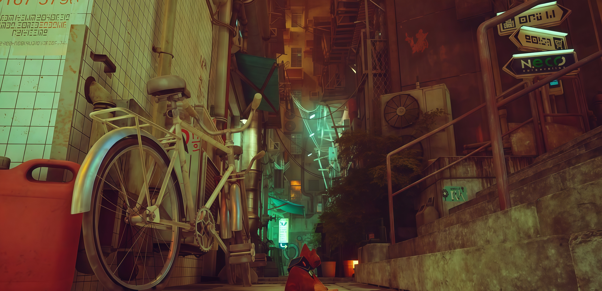
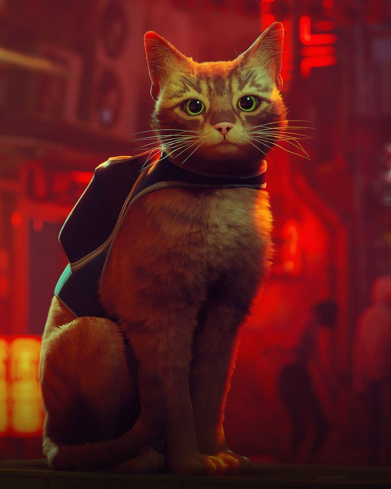
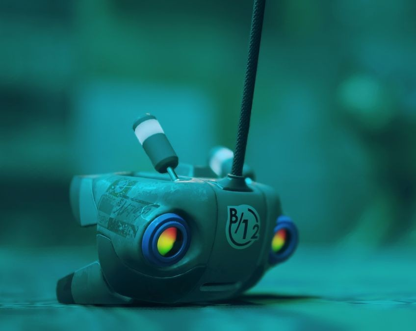
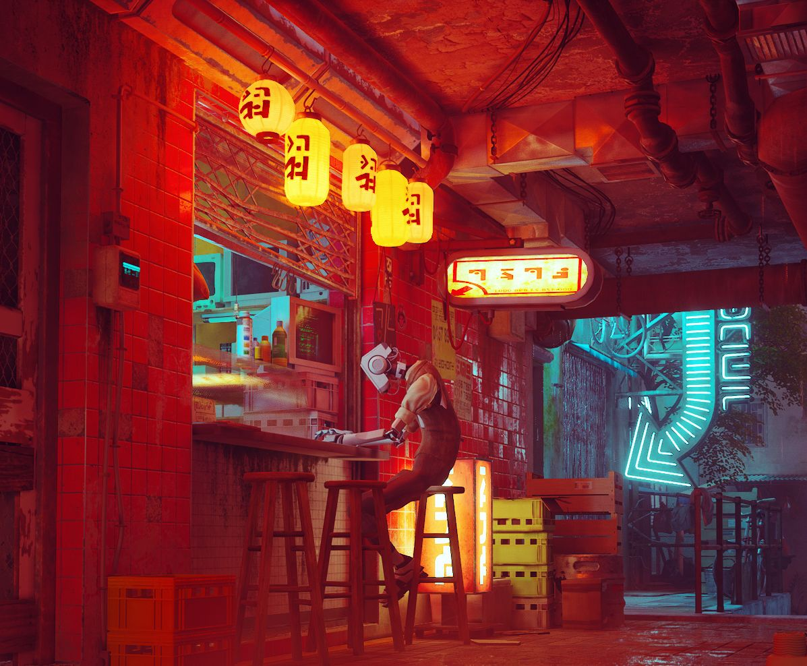
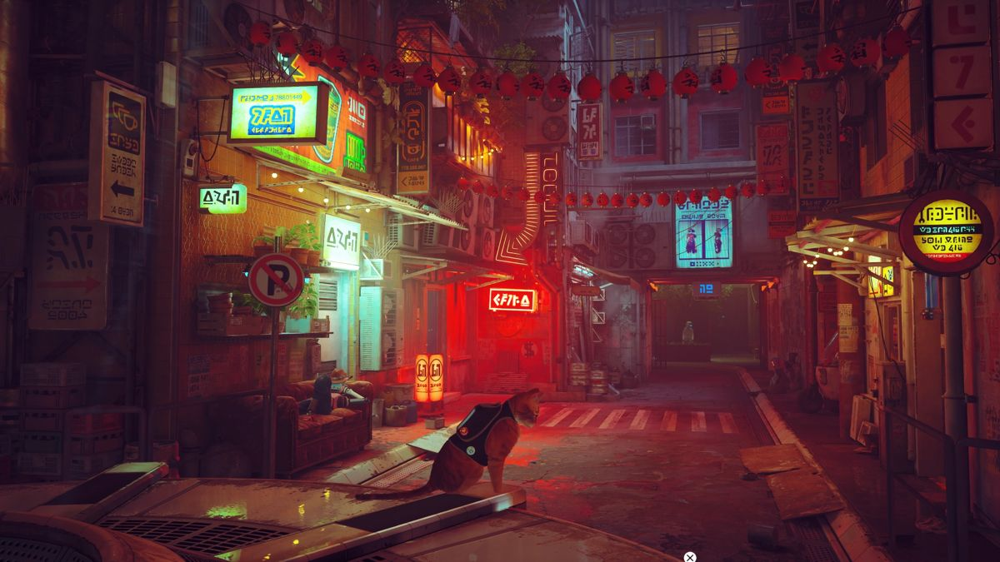

ANNAPURNA INTERACTIVE · A JOURNEY INTO THE UNKNOWN
S
T
R
A
Y
Потерянный в городе, забытом человечеством. Один среди теней, огней и безмолвных улиц. Его путь домой начинается здесь.
Начать путешествие↓
THE FALL
ПРОКРУТИ, ЧТОБЫ УЗНАТЬ ИСТОРИЮ
STRAY · 2022

CAT
UNKNOWN / ALONE
A DIFFERENT PERSPECTIVE
Мир слишком
велик для
одного кота.
Он не герой легенды и не спаситель мира. Он просто хочет найти дорогу назад.
Но в этом странном месте каждый прыжок, каждый звук и каждая открытая дверь становятся частью большого путешествия.
Исследуй. Слушай. Не бойся идти дальше.
THE CITY BELOW
Здесь время
остановилось.
Под поверхностью мира существует другая жизнь. Узкие переулки, ржавые конструкции и свет, который никогда не рассеивает темноту полностью.
THE WALLS HAVE SEEN EVERYTHING
01
Город не пуст. Просто его обитатели давно привыкли жить среди руин чужого прошлого.
A SMALL LIGHT
Даже в темноте
можно найти кого-то.
B-12 / ONLINE
Не совсем один.
Маленький дрон становится глазами, голосом и проводником в незнакомом мире.
Он помогает понять прошлое города, а кот напоминает ему о том, что значит чувствовать и быть рядом.
SIGNAL ESTABLISHED
A FRIEND IN THE DARKLIFE GOES ON
У каждого здесь
своя история.
Среди металла и бетона сохранилось то, что делает город живым: память, привычки, встречи и надежда.


ONE CITY · MANY STORIES · ONE WAY HOME
THE WAY HOME
Иногда нужно
потеряться,
чтобы найти путь.
Это история не о том, как изменить весь мир. Это история о маленьком существе, которое продолжало идти, даже когда дорога казалась бесконечной.
Вернуться в архив
STRAY
A JOURNEY THROUGH THE UNKNOWN
END / BEGINNING